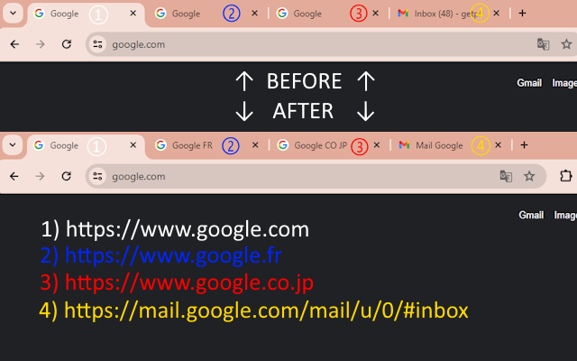

About the "Domain Tab Title" Chrome extension
A tiny script to prepend the tabs domain names as keywords to the tabs titles.
To achieve that the current html document title will be dynamically modified with the domain (or subdmain) name's keywords prepended with a vertical pipe character "|" to the original title.
For example if you visit the following websites, the tab or window title will become :
https://www.google.co.fr: “Google FR” instead of Google
https://www.google.co.jp: “Google CO JP” instead of Google
https://mail.google.com: “Mail Google | Inbox - xxx@gmail.com” instead of Inbox - xxx@gmail.com

Defaults "www" prefix and ".com" suffix are excluded and will be hidden, displaying clean corporate brand names :
https://www.apple.com: “Apple” instead of Apple
https://www.amazon.com: “Amazon | Amazon.com. Spend less. Smile more.” instead of Amazon.com. Spend less. Smile more.
https://www.microsoft.com: “Microsoft | Microsoft – Cloud, Computers, Apps & Games” instead of Microsoft – Cloud, Computers, Apps & Games
This should work with sub-pages and when pages are updated dynamically via ajax as well.
I made this addon a few years ago when working with multi-language websites. Useful for English native speakers as well and can help you detect typical fishing site using fake domains.
Visit the Chrome Webstore to install the extension.